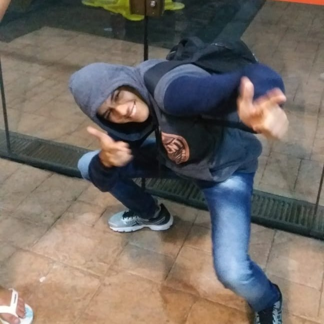

Dicas para população para reduzir o lixo

Publicado por Kellvyn Magela

Existem outras formas de reduzir o lixo, mas elas não são utilizadas pela maioria das pessoas, o que é um problema pois se não houver cooperação da parte da população, a quantidade de lixo só tenderá a crescer. Por isso, abaixo terá algumas formas de reduzir lixos, além de incentivar o descarte correto.
- • Realize a coleta seletiva Colaborar com a coleta seletiva é muito importante para que o lixo não se espalhe e se misture pela cidade. Existem caminhões de coleta seletiva espalhados por São Paulo, que levam o lixo para o local correto, onde serão tratados, reciclados e não farão mal ao meio ambiente.
- • Evite o uso de descartáveis Um dos métodos principais para reduzir o lixo, é evitar comprar produtos descartáveis. É comum Fast Food e redes de alimentação em geral oferecerem para seus clientes produtos descartáveis, como copos de papel, talheres de plástico, canudos de papel, entre outros. Evite usar esse tipo de descartável no dia a dia, existem diversas opções alternativas para diminuir esses produtos, como canudos de alumínio e copos retráteis. Outra ideia é a utilização de ecobags ou carrinhos de compras. Além de serem maiores do que sacolas plásticas, possuem um tempo útil muito maior do que essas sacolas convencionais. Mais fáceis de serem guardadas e ainda causam um impacto bem menor no meio ambiente.
- • Planeje suas compras Fazer uma boa administração de suas compras favorece o consumo consciente, e além de ajudar o meio ambiente, reduzindo o desperdício de comida e produtos, ajuda financeiramente, reduzindo os gastos desnecessários. Uma forma de planejar é fazer uma lista de todos os itens adquiridos entre uma compra e outra, e assim verificar quais produtos não foram bem aproveitados.
- • Opte por uma produção caseira Produzir seus próprios alimentos como sucos, geleias e bolos, são uma forma de reduzir o uso de embalagens plásticas, de metais e vidros. Além de estar interligada com o planejamento das compras, reduzindo ainda mais em gastos desnecessários.
- • Reutilização A reutilização é muito importante e deve ser colocada em prática sempre que for possível. Um exemplo de reutilização pode ser a embalagem de sorvete, que pode ser reutilizado como uma Tupperware posteriormente, assim como a embalagem de um requeijão, que poderá ser utilizada como um copo.
- • Fique atento ao lixo orgânico Há diversos materiais orgânicos que são jogados no lixo, mas que podem servir como compostagem orgânica, ou seja, o adubo. Os adubos oferecem nutrientes naturais essenciais para as plantas, e fazem bem para o meio ambiente. São exemplos de adubos: Casca de banana, Casca de ovo, resto de frutos, plantas secas e entre outros.
- • Priorize produtos com refis Uma alternativa de redução de lixo, é priorizar os produtos com refis, assim, o consumidor não irá comprar produtos com embalagens repetidas, o que ocasionaria em um acúmulo desnecessário. São exemplos de refis: Perfumes, cremes, algumas bebidas e entre outros.